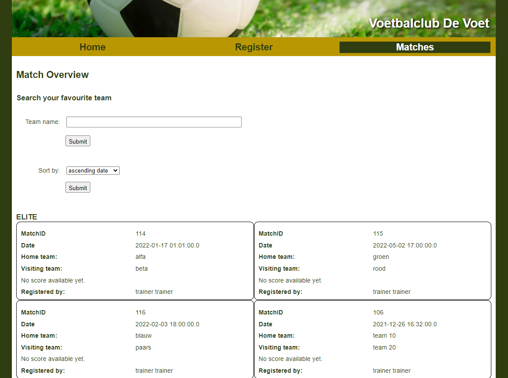

Mijn projecten
Broodjeszaak ApplicatieVoor het vak Objectgeoriënteerd Progammeren kregen we de opdracht een applicatie te maken voor een broodjeszaak. De applicatie bestaat uit 3 vensters: één voor het bestellen, één voor de keuken, en 1 voor settings, inventaris en statistieken. |

|
|  |
SportClub ApplicatieDe sportclub webapplicatie was een groepswerk voor het vak Webontwikkeling 4, waarop verschillende functies m.b.t. een sportclub bruikbaar zijn. De applicatie biedt een overzicht van wedstrijden, leden, en trainingssessies. Leden kunnen een account aanmaken en inloggen om de juiste wedstrijden en trainings te zien. Ook kan de administrator nieuwe wedstrijden, gebruikers en trainings toevoegen en bewerken. |
Evenementplanner WebapplicatieMijn project voor Internetprogrammeren Major is een webapplicatie die dient als een evenementenplanner. Organisaties kunnen evenementen aanmaken, en gebruikers kunnen op deze evenementen abonneren. |

|